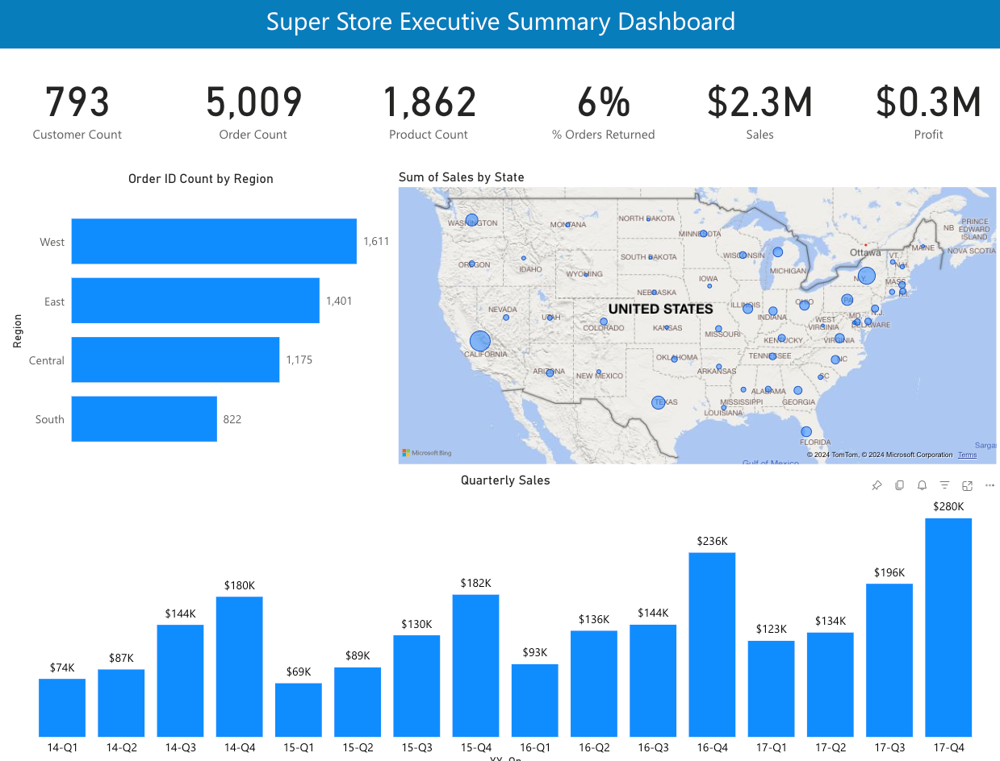
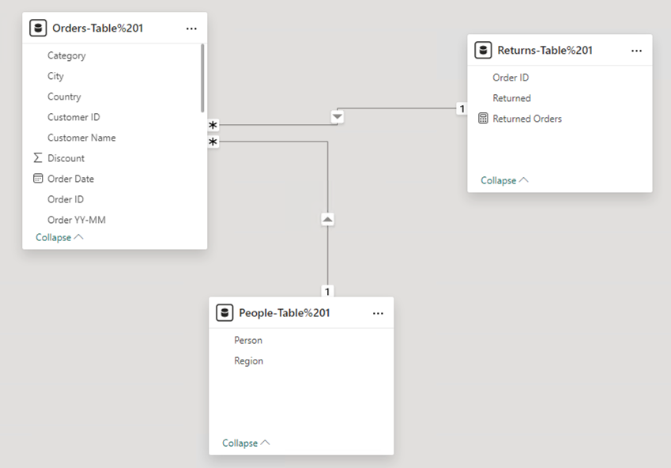

I've taken a number of training courses on Power BI from LinkedIn Learning:
This is a quick, simple dashboard using the famous Super Store data set from Tableau, that consists of 3 related tables: Orders, Returns, and People. The dashboard includes a number of counts across the top row, a bar chart showing order count by region, a bar chart of sales by quarter, and a Geo map of the US showing sales by state.
 